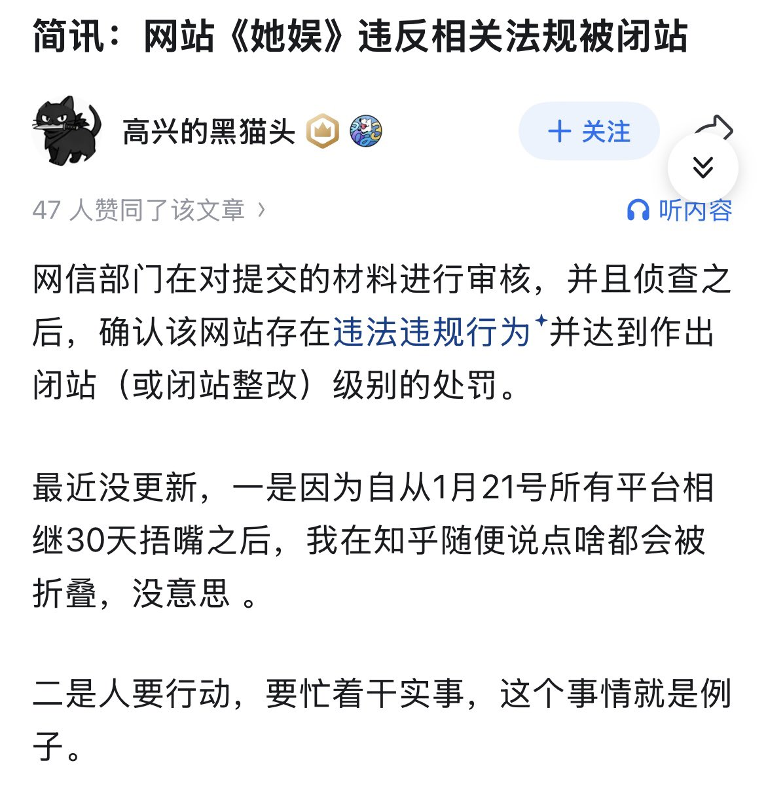
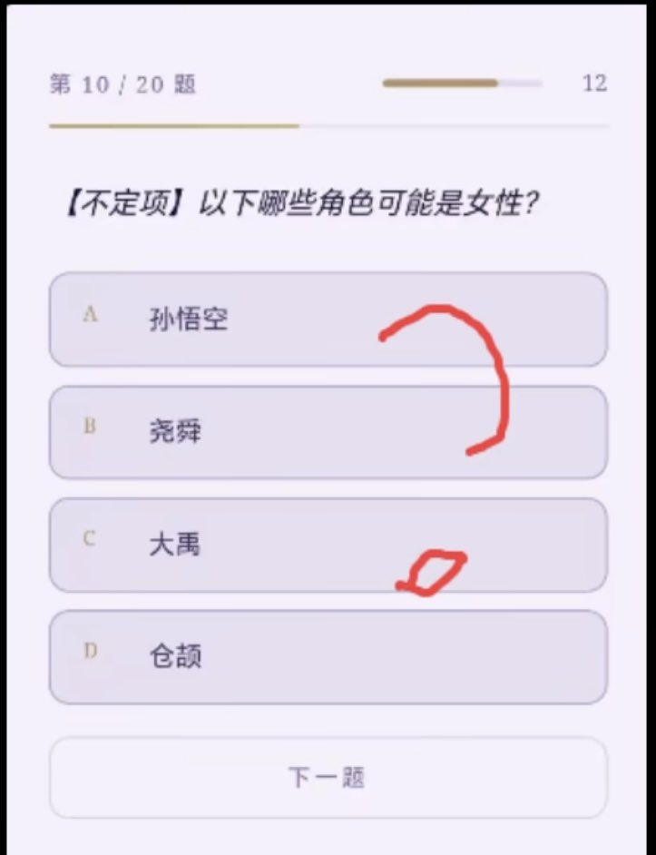
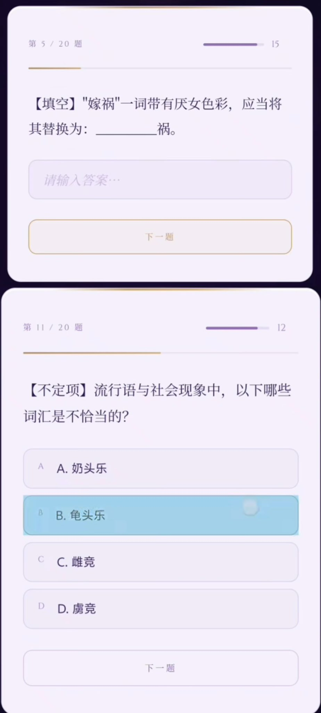
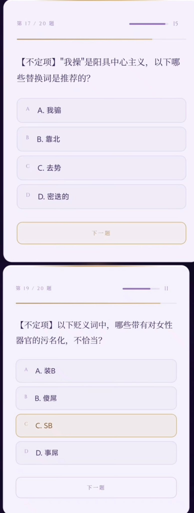

たたなこ
@tatanakots
@SagerRgyalpo 她娱不是托管在cloudflare上且使用amazonses和cf mail route作为邮件服务的网站吗，怎么这么容易就被takedown了




Sagêr Gyaebo ♂⚖️ 萨格杰布
@SagerRgyalpo
极端主义女权网站《她娱》因男网友的大量举报今日已被闭站。
该网站入站须答对20道题中的至少14道，并且有超200道的题库。她们要求：表示男性的“他”改为“牠”、“卵细胞”更应被称作“主细胞”，“婚姻” 应写为“昏男”，“凤凰男” 替换为“蚂蝗男”，“婊子” 改写为“屌子”，“奶头乐” https://t.co/qQ26xJtlfV